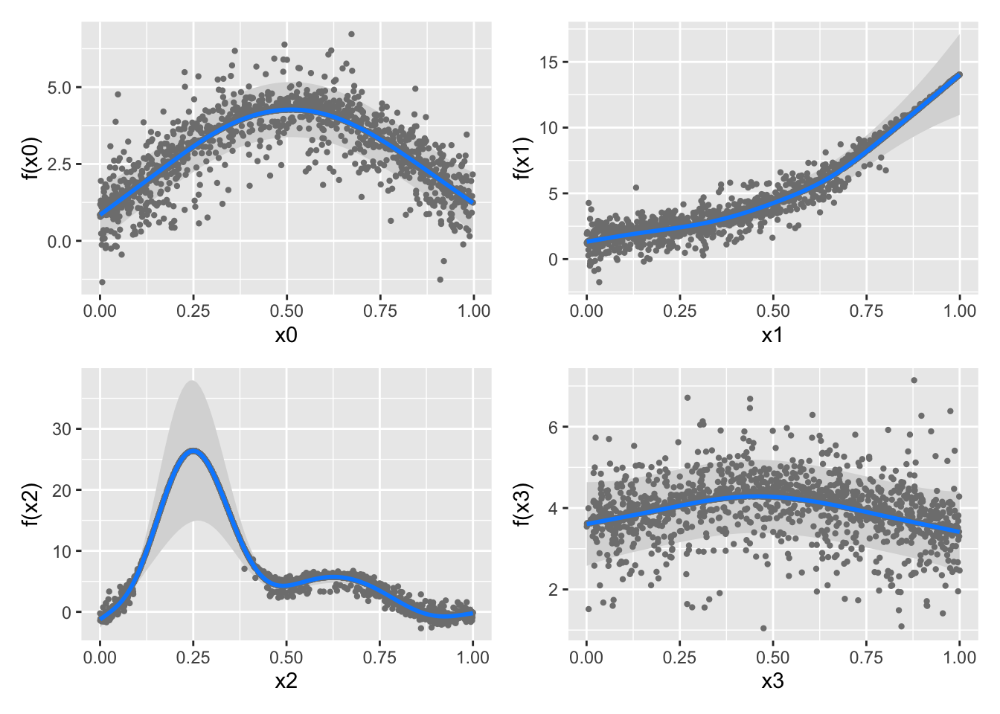
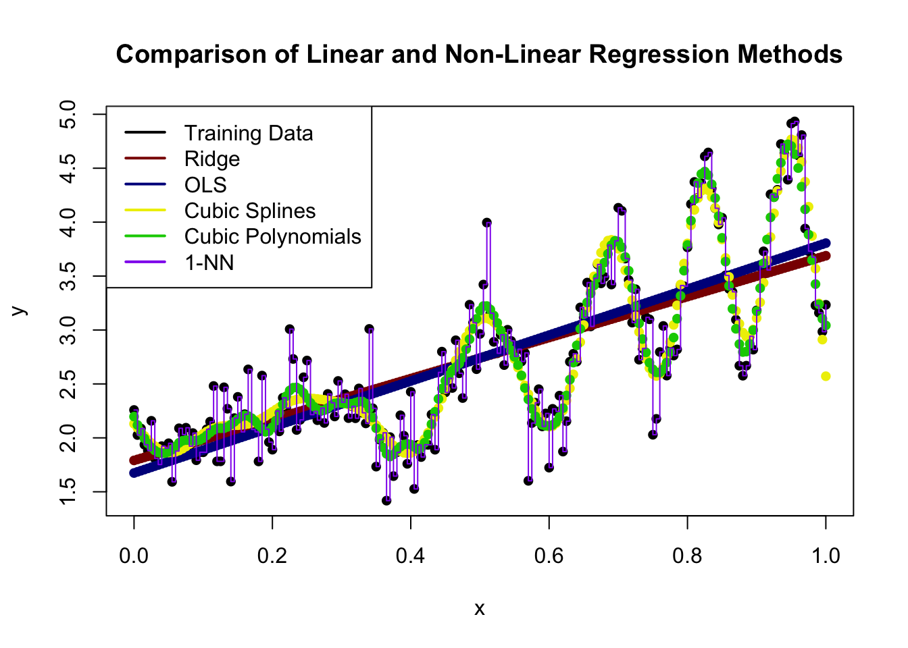

Gu & Wahba 4 term additive model
The original test booklet can be found here.
\[\newcommand{\bw}{\mathbf{w}}\newcommand{\bX}{\mathbf{X}}\newcommand{\by}{\mathbf{y}}\newcommand{\bx}{\mathbf{x}}\newcommand{\R}{\mathbb{R}}\newcommand{\bbeta}{\mathbf{\beta}}\newcommand{\argmin}{\text{arg min}}\newcommand{\bD}{\mathbf{D}}\newcommand{\bzero}{\mathbf{0}}\newcommand{\bI}{\mathbf{I}}\newcommand{\bz}{\mathbf{z}}\newcommand{\bQ}{\mathbf{Q}}\newcommand{\bU}{\mathbf{U}}\newcommand{\bV}{\mathbf{V}}\newcommand{\bone}{\mathbf{1}}\newcommand{\bY}{\mathbf{Y}}\newcommand{\bA}{\mathbf{A}} \newcommand{\Dcal}{\mathcal{D}} \newcommand{\br}{\mathbf{r}}\]
A maximum likelihood estimator is one which sets the unknown parameters in order to minimize the negative log PDF/PMF of the observed data.
True. Maximum likelihood estimators are generally implemented by minimizing the negative log-likelihood because the latter is an an equivalent convex optimization problem.
To wit:
\[\begin{align*} \max_{\bbeta} \prod_i \mathcal{L}(\bbeta; \bx_i) &= \max_{\bbeta} \log\left[\prod_i \mathcal{L}(\bbeta; \bx_i)\right] \\ &= \max_{\bbeta} \sum_i \log \mathcal{L}(\bbeta; \bx_i) \\ &= \min_{\bbeta} \sum_i -\log \mathcal{L}(\bbeta; \bx_i) \\ \end{align*}\]
An important special case of this is deriving MSE loss as the MLE of a Gaussian regression model: the \(\max e^{-\|\br\|^2}\) likelihood for the residuals becomes \(\min \|\br\|^2 = \min \|\by - \bX\bbeta\|^2\).
Multi-class with \(K\) classes classification can be performed by combining \(K\) binary classifiers using a “one-vs-rest” strategy.
True. See, e.g., the sklearn documentation.
At the same level of sparsity, the lasso has smaller training error than best subsets regression.
False. Because it applies both shrinkage and selection, the lasso will have lower test error than pure selection methods. Our hope is that the lower variance associated with this shrinkage will improve out of sample predictive performance.
Bagging is the practice of building an ensemble by sub-sampling features.
False. Bagging - or bootstrap aggregation - uses random sub-samples of the observations, not the features.
Linear models are preferred in (relatively) small data scenarios because they have (relatively) lower variance.
True. This is the main motivation for using linear methods: they are less flexible than non-linear methods, giving them a lower variance. Put another way, the set of all lines is much smaller than the set of all continuous functions and that ‘volume reduction’ reduces variance.
The elastic net penalty combines the ridge and best subset penalties.
False. The elastic net penalty combines the ridge and lasso penalties. Specifically, the elastic net penalty is:
\[ + \underbrace{\lambda_1 \|\beta\|_1}_{\text{Lasso Part}} + \underbrace{\frac{\lambda_2}{2}\|\beta\|_2^2}_{\text{Ridge Part}}\]
Because kernel methods are more flexible than purely linear models, they always provide out-of-sample (test) error improvements.
False. We might hope that kernel methods provide improved performance, but it is impossible to say that one method always outperforms another.
(In generality, this result is known as the “No Free Lunch” Theorem. It has been developed in many forms, most notably by David Wolpert (1996).)
In an SVM, support vectors are training points closest to the decision boundary.
True.
Ridge regression has the closed form solution \(\hat{\bbeta}_{\text{Ridge}} = (\bX^{\top}\bX + \lambda \bI)^{-1}\bX^{\top}\by\)
True. To wit,
\[\begin{align*} \hat{\bbeta}_{\text{Ridge}} &=\argmin_{\bbeta} \frac{1}{2}\|\by - \bX\bbeta\|_2^2 + \frac{\lambda}{2}\|\bbeta\|_2^2 \\ \implies \bzero &= \left.\frac{\text{d}}{\text{d}\bbeta}\left[\frac{1}{2}\|\by - \bX\bbeta\|_2^2 + \frac{\lambda}{2}\|\bbeta\|_2^2\right]\right|_{\bbeta = \hat{\bbeta}} \\ &= -\bX^{\top}(\by - \bX\bbeta) + \lambda\bbeta \\ &= -\bX^{\top}\by + (\bX^{\top}\bX + \lambda \bI)\bbeta \\ \bX^{\top}\by &= (\bX^{\top}\bX + \lambda \bI)\bbeta \\ \implies \hat{\bbeta}_{\text{Ridge}} &= (\bX^{\top}\bX + \lambda \bI)^{-1}\bX^{\top}\by \end{align*}\]
Spline methods can only be applied in regression settings, not classification.
False. The generalization of linear models to additive models (one spline per feature) can be used for the linear predictor term of a GLM as well, resulting in the very-useful class of Generalized Additive Models or GAMs.
To wit, let’s use a logistic GAM on some simulated data:
Gu & Wahba 4 term additive model
Look at all that spline-y goodness!
Best subset regression can be solved efficiently using backwards stepwise approaches, but not forward stepwise.
False. Best subsets optimization is a non-convex and combinatorial optimization problem and no general efficient solution exists to solve this class of problems.
Notably, backwards methods assume \(n > p\) (so you can fit the full model before deleting features) which is not always true, particularly in the scenarios where selecting a sparse submodel is important.
Logistic regression can be considered a soft or probabilistic classifier.
True. Because logistic regression targets the mean of its Bernoulli sampling distribution, it produces probabilities.
Which of the following are discriminative classifiers?
xgboostOn the given list, the following are discriminative classifiers:
xgboostEach of these give us an estimate of \(p(Y | X)\) but do not allow us to construct \(p(X | Y)\) because they do not model \(p(X)\).
Define shrinkage in the context of regression and explain why it may be helpful.
See notes for more details, but you should at least mention:
Give three reasons we may want to use a sparse regression or classification model
Possible answers include:
This list is not comprehensive and alternate correct answers will also receive credit.
In the context of ML Fairness, “equality of opportunity” is often defined as two groups having the same true positive rate where the TPR is defined as \[\text{TPR} = \frac{\text{TP}}{\text{P}} = \frac{\text{TP}}{\text{TP} + \text{FN}} = \text{Sensitivity / Recall}\]
Given the following two confusion matrices, is equality of opportunity satisfied? If no, how far off is it?
| Group 1 | ||
| Prediction |
Ground Truth
|
|
|---|---|---|
| + | - | |
| + | 50 | 20 |
| - | 10 | 1000 |
| Group 2 | ||
| Prediction |
Ground Truth
|
|
|---|---|---|
| + | - | |
| + | 25 | 15 |
| - | 5 | 100 |
We see that the TPR for group 1 is:
\[\text{TPR}_1 = \frac{\text{TP}_1}{\text{TP}_1 + \text{FN}_1} = \frac{50}{50+10} = \frac{5}{6} \]
and
\[\text{TPR}_2 = \frac{\text{TP}_2}{\text{TP}_2 + \text{FN}_2} = \frac{25}{25+5} = \frac{5}{6} \]
so the two groups have the same TPR and satisfy an ‘equality of opportunity’ constraint. Note however that these two tables do not satisfy a demographic parity:
The choice of which fairness metric to use (these or many others) is very problem specific.
Success of Lasso regression can be measured on two criteria:
For each criterion, describe the conditions needed for the lasso to perform well on each criterion. Which is more commonly satisfied?
The first form of success is also known as prediction consistency and it is relatively easily satisfied. (The key ideas are ERM and the relatively low variance of regularized linear models implying a small-ish generalization gap: in constraint form, if \(\hat{\bbeta}\) and \(\bbeta_*\) both lie in some small ball, they can’t be that far from each other). See Section 11.3 and Theorem 11.2 of SLS for more details.
The second form of succcess is known as model selection consistency or sparsistency (short for “sparsity consistency”) and it is much harder to satisfy. We have to assume near-zero correlation among most columns of \(\bX\) to guarantee this type of success. See Section 11.4 of SLS for more details.
Stepping back just a bit from the lasso, this returns us to a more fundamental point about correlated features: if you have highly correlated features, it’s near impossible to figure out which is “right” and which is “wrong” because they give essentially the same predictions, making it hard for ERM to distinguish. But because the predictions are almost equal, the choice doesn’t actually matter all that much at the end of the day.
In your own words, write out a 5-fold cross-validation scheme for tuning ridge logistic regression to maximize classification accuracy. You must also include steps that guarantee an unbiased estimator of the test-set classification accuracy.
Something like:
Split training data in an 80%/20% fashion into \(\Dcal_{\text{train}}\) and \(\Dcal_{\text{test}}\).
Build a grid of 100 \(\lambda\) values (typically log-spaced)
Split \(\Dcal_{\text{train}}\) into 5 equal subsets \(\Dcal_1, \dots, \Dcal_5\).
For each \(\lambda\), determine \(\hat{\text{Acc}}_{\lambda}\) as:
For \(k=1, 2, 3, 4, 5\):
Compute ${} = {i=1}^5 \(\hat{\text{Acc}}_{\lambda, k}\)
Select \(\hat{\lambda} = \argmin_{\lambda} \hat{\text{Acc}}_{\lambda}\)
Refit logistic ridge regression with a penalty \(\hat{\lambda}\) to $_{}
Compute the accuracy of the resulting classifier on \(\Dcal_{\text{test}}\) and report it as \(\hat{\text{Acc}}\).
Here because \(\hat{\text{Acc}}\) is computed on “new” data, it is unbiased for the true test accuracy.
Describe the three parts of a generalized linear model, noting their general role in GLM specification and precisely identifying them in Poisson (log-linear or count) regression:
Many possible answers, including:
Linear predictor (\(X\beta\)). Used to incorporate the covariates into the prediction on an unconstrained scale. (Can be generalized to non-linear forms \(f(X)\) using spline or kernel methods)
(Inverse)-Link Function: maps \(\mathbb{R}\) to the domain of the mean of the samping distribution. Here the sampling distribution is Poisson so its mean must fall in \(\mathbb{R}_{> 0}\) and the inverse link function is \(\exp{\cdot}\).
I would also accept names like “mapper” or “squish function” here.
Sampling distribution. This gives the randomness associated with the response. Here, it is a Poisson distribution.
In brief, these give the probabilistic model:
\[Y | X \sim \text{Poisson}(e^{X\beta})\]
(While popular, this is actually a rather painful model since the Poisson has its own \(e^{\cdot}\) term and this winds up being “double-exponential” in \(X\beta\), making it numerically and statistically unstable. The slightly unprincipled but useful hack is to just fit normal OLS to \(\log(Y)\) instead: hence the historic name “log-linear”.)
Some statistical software implements logistic regression with a small ridge penalty that cannot be disabled. Give two reasons why this is a reasonable design choice.
Some possibilities include:
Other valid answers will be accepted.
Why is there minimal risk of overfitting from excessive bootstrapping in a bagging procedure?
When we perform more bootstrap samples, we are simply reducing the Monte Carlo error that separates our samples from the ‘true’ empirical distribution. This has no effect on moving our empirical distribution nearer or further from the true data distribution.
More simply, more bootstrapping just reduces the randomness from our random sampling of the training data, but it doesn’t necessarily fit it any better or worse since we’re using the same base learner. Or even more simply, “bootstrapping is a variance story, not a bias story”.
Compare and contrast spline and kernel models. Give 2 key similarities (“compare”) and 2 key differences (“contrast”).
Some possibilities are below. Other valid answers will be accepted.
Note that there is a related concept of “kernel smoothing” that we didn’t discuss in class (this is related to the ‘smooth histogram’ you might know from ggplot2::geom_density); this can make searching on this topic a bit tricky.
Give three scenarios, other than simply combining different base learners to improve performance, where model stacking could solve a practical problem.
Many possible answers, including:
Other valid answers will be accepted.
Rank the following methods in terms of statistical complexity (i.e., potential wiggliness) with 1 being the lowest and 5 being the highest:
You may assume the two piecewise methods have the same number of pieces.
Ridge < OLS < Cubic Spline < Cubic Polynomials < 1-NN
To wit:
library(glmnet)
library(locfit)
library(mgcv)
set.seed(9890+2026)
x <- seq(0, 1, length.out=201)
y_bar <- x^2 + exp(x) + abs(x) * sin(30*x^2) + 1/(x+1)
y <- y_bar + rnorm(x, sd=0.25)
X <- cbind(1, x)
plot(x, y, pch=16, main="Comparison of Linear and Non-Linear Regression Methods")
points(x, predict(glmnet(X, y, alpha=0, lambda=0.1), newx=X), pch=16, col="red4")
points(x, predict(lm(y ~ x)), pch=16, col="blue4")
points(x, predict(gam(y ~ s(x, k=20))), pch=16, col="yellow2")
points(x, predict((locfit(y ~ locfit::lp(x, deg = 3, nn=0.1))), newdata=x), pch=16, col="green3")
lines(x, approxfun(x, y, n=1)(x), type="s", col="purple2")
legend("topleft",
legend=c("Training Data",
"Ridge",
"OLS",
"Cubic Splines",
"Cubic Polynomials",
"1-NN"),
col=c("black", "red4", "blue4", "yellow2", "green3", "purple2"),
lty=1,
lwd=2)
Here a few of the differences are not entirely clear, but we see that:
Modern multi-layer (deep) neural networks are formed by composing a series of linear and non-linear (“activation”) terms. E.g., \[\hat{y} = f_0(f_{1, 1}(f_{1, 1, 1}(X), f_{1,1,2}(X)), f_{1,2}(f_{1,2,1}(X), f_{1,2,2}(X)))\] where each \(f(\cdot)\) is of the form \((\bX\bw)_+\) - that is, multiply \(\bX\) by some vector of weights \(\bw\) and set negative elements to zero. (Real networks typically have many more layers and inputs to each layer.) Using the principles discussed in this course, what can you infer about the behavior of this type of system? When will it be successful and when will it struggle? What does this tell you about the inputs and scenarios required to build and successfully deploy this type of model?
There are many possible valid answers and I’m not looking for anything too specific, but I would expect you to say things like:
The combination of big model + lots of data + slow to fit is why the “AI Data Center” discourse has taken over the world of late.
You are a researcher trying to use a new single-cell sequencing technique as a diagnostic tool for a moderately rare disease that occurs in about 5% of the population. (You may assume this is an “on/off” disease and that there are no gradations or different severities.) The details of this technique are irrelevant to this problem, but in essence, it can count the number of proteins of a given type in a cell. Your hypothesis is that patients with the disease have a different amount of this protein in their cells than “healthy” (control) patients.
Because this protein is relatively rare in both patient groups, you have chosen to model the count of the protein as a Poisson random variable with different means for each group. Based on prior research, healthy patients have an average of 3 copies of this protein per cell, while diseased patients have 6 copies per cell. The sequencing technique you use produces statistically independent counts for 5 cells from each patient; that is, you do not need to worry about correlation among the counts. In this problem, you will develop a custom generative classifier to identify this disease.
Recall: if a variable \(X\) follows a Poisson distribution with mean \(\lambda\) it has a probability mass function given by \[\mathbb{P}(X = k) = \frac{\lambda^k e^{-\lambda}}{k!} \text{ for } k=0, 1, 2, \dots\]
In this problem, you will derive a new loss function for regression, use it to pose a new ERM problem, solve it in closed-form using linear algebra, develop an iterative algorithm for fitting this model on exceptionally large data sets, and construct a simulation to estimate its error. Note that not all parts of this problem are weighted equally.
You apply your sequencing technique to a patient and it reports the following protein counts: \((5, 4, 10, 1, 7)\). What is the probability of observing this set of observations if the patient is from the diseased group?
As discussed above, we assume the cells are independent, so the probability is just that of 5 IID Poisson observations, which we get by multiplication:
\[\begin{align*} \mathbb{P}[(5, 4, 10, 1, 7) | \text{Disease}] &= \mathbb{P}(5 | \text{Disease})\mathbb{P}(4 | \text{Disease})\mathbb{P}(10 | \text{Disease})\mathbb{P}(1 | \text{Disease})\mathbb{P}(7 | \text{Disease}) \\ &= \left(\frac{6^5e^{-6}}{5!}\right)\left(\frac{6^4e^{-6}}{4!}\right)\left(\frac{6^10e^{-6}}{10!}\right)\left(\frac{6^1e^{-6}}{1!}\right)\left(\frac{6^7e^{-6}}{7!}\right) \\ &= \frac{6^{5 + 4 + 10 + 1 + 7}e^{-6 * 5}}{5!4!10!7!} \\ &= \frac{6^{5 + 4 + 10 + 1 + 7}e^{-6 * 5}}{5!4!10!7!} \\ &= \frac{6^{27}e^{-30}}{5!4!10!7!} \\ &\approx 1.8183 \times 10^{-6} \end{align*}\]
which may seem very small indeed, but see the next section.
Using Bayes’ rule as the basis of a generative classifier, what is the probability the patient from the previous part has the disease?
Hint: The denominator of the Poisson PMF doesn’t depend on \(\lambda\), so many factorial terms will simplify and cancel.
By a similar argument as above, the observation likelihood if the patient doesn’t have the disease is:
\[\begin{align*} \mathbb{P}[(5, 4, 10, 1, 7) | \text{No Disease}] &= \frac{e^{27}e^{-15}}{5!4!10!7!} \end{align*}\]
If we put this into Bayes’ Rule, with a prior probability of \(\mathbb{P}(\text{No Disease}) = 95\%\), we get
$$\[\begin{align*} \mathbb{P}[\text{Disease} | (5, 4, 10, 1, 7)] &= \frac{\mathbb{P}[(5, 4, 10, 1, 7) | \text{ Disease}] * \mathbb{P}[\text{Disease}]}{\mathbb{P}[(5, 4, 10, 1, 7) | \text{ Disease}] * \mathbb{P}[\text{Disease}] + \mathbb{P}[(5, 4, 10, 1, 7) | \text{No Disease}] * \mathbb{P}[\text{No Disease}]} \\ &= \frac{\frac{6^{27}e^{-30}}{5!4!10!7!} * 0.05}{\frac{6^{27}e^{-30}}{5!4!10!7!} * 0.05 + \frac{3^{27}e^{-15}}{5!4!10!7!} * 0.95} \\ &= \frac{6^{27}e^{-30} * 0.05}{6^{27}e^{-30} * 0.05 + 3^{27}e^{-15} * 0.95} \\ &= \frac{6^{27}e^{-30} * 0.05}{6^{27}e^{-30} * 0.05 + 3^{27}e^{-15} * 0.95} \\ &\approx 68.3\% \end{align*}\]
Here the probability of having the disease is high even though the probability of that particular observation was low because Bayes’ Rule uses relative probabilities of the two outcomes.
Generalizing your results, develop a simple decision rule for this problem. That is, give a simple set of conditions that indicate whether the patient is predicted to have the disease or not. Note that your decision rule must be simple enough to be implemented using a a six-function calculator (add, subtract, multiply, divide, powers, logs) calculator, and may not just be a general aphorism like ``do Bayes’ rule.’’
Hint: Independent Poisson random variables add. That is, if \(X, Y\) are independent with \(X \sim\text{Poisson}(\lambda_X)\) and \(Y\sim\text{Poisson}(\lambda_Y)\) then \(X + Y \sim \text{Poisson}(\lambda_X + \lambda_Y)\)
First, using the hint, we see that we’re really just comparing the probability under two models \(\text{Poisson}(5 * 6) = \text{Poisson}(30)\) (Disease) and \(\text{Poisson}(5 * 3) = \text{Poisson}(15)\) (No Disease)
Furthermore, from the prior hint, we also see that the Poisson denominator doesn’t really matter so we really just need to determine whether:
\[\begin{align*} \frac{1}{2} & \leq \mathbb{P}(\text{Disease} | X) \\ &= \frac{\mathbb{P}(X | \text{Disease}) * \mathbb{P}(\text{Disease})}{\mathbb{P}(X | \text{Disease}) * \mathbb{P}(\text{Disease}) + \mathbb{P}(X | \text{No Disease}) * \mathbb{P}(\text{No Disease})} \\ &= \frac{0.05 * 30^X * e^{-30}}{0.05 * 30^X * e^{-30} + 0.95 * 15^X * e^{-15}} \\ &= \frac{1}{1 + \frac{0.95}{0.05} \left(\frac{15}{30}\right)^X e^{30-15}} \\ &= \frac{1}{1 + 19e^{15} * 0.5^X} \\ \implies 19e^{15} * 0.5^X &< 1 \\ 2^{-X} &< \frac{e^{-15}}{19} \\ -X &< -15 \log_2(e) - \log_2(19) \\ X &> 25.8 \end{align*}\]
So we basically just investigate whether the total protein count is 26 or higher to determine whether there is a disease probability greater than one-half. You might be surprised why the number is at a 26 and not closer to the middle of 15 and 30, but that’s the effect of the prior.
In the last few steps (computing the prior-weighted likelihood ratio), you might recognize a Neyman-Pearson construction from STA 9719. This shouldn’t surprise you - two-class classification is just (simple) hypothesis testing in disguise.
After some early initial successes, you want to develop a clinical protocol using your diagnostic system. You have settled on the following structure:
If \(\mathbb{P}(\text{disease} | X) = \hat{p} > \overline{p}\), provide additional gold-standard' testing at a cost of $\$4,000$. You may assume thegold-standard’ test never makes a mistake.
If patient is diseased but this is missed in initial screening, complications ensue that cost \(\$50,000\) to treat
Here \(\overline{p}\) is a cost-sensitive threshold that is chosen to balance the various costs associated with both false positives and false negatives in order to ensure minimum expected cost.
Find the optimal \(\overline{p}\) for this problem. You may assume your classifier is well-calibrated: that is, if you have \(\mathbb{P}(\text{disease} | X) = \hat{p}\), then the patient truly has a probability \(\hat{p}\) of having the disease and (hence) the gold-standard method will detect disease with probability \(\hat{p}\).
As hinted, we can approach this by finding \(\overline{p}\) that equilibrates the expected costs of the two decisions:
Set equal:
\[4 + 10\overline{p} = 50\overline{p} \implies \overline{p} = 0.1\]
So we send the patient for treatment if the classifier says they have a 10% chance or higher of having the disease. Note that we’re far away from the 50% line we used above since now we’re sensitive to the asymmetric costs of misdiagnosis. (This should also tell you something about why the high costs of ‘useless’ diagnostic procedures in US health care are not actually irrational.)
Combining your answers from the previous two sections, what is the clinical decision rule for this protocol? I.e., fill in the blank for “If ________, send the patient for gold-standard testing.”
We return to the previous part, but now work out the decision boundary at 10% rather than at 50%:
\[\begin{align*} \frac{1}{10} & \leq \mathbb{P}(\text{Disease} | X) \\ &= \frac{\mathbb{P}(X | \text{Disease}) * \mathbb{P}(\text{Disease})}{\mathbb{P}(X | \text{Disease}) * \mathbb{P}(\text{Disease}) + \mathbb{P}(X | \text{No Disease}) * \mathbb{P}(\text{No Disease})} \\ &= \frac{0.05 * 30^X * e^{-30}}{0.05 * 30^X * e^{-30} + 0.95 * 15^X * e^{-15}} \\ &= \frac{1}{1 + \frac{0.95}{0.05} \left(\frac{15}{30}\right)^X e^{30-15}} \\ &= \frac{1}{1 + 19e^{15} * 0.5^X} \\ \implies 19e^{15} * 0.5^X & < 9 \\ 2^{-X} &< \frac{9e^{-15}}{19} \\ -X &< \log_2(9) -15 \log_2(e) - \log_2(19) \\ X &> 22.72 \end{align*}\]
So now we send a patient for further testing if their total proteins are 23 or higher. (Naively, this is a scenario where the likelihood of the disease is 2.6x higher than no disease, but we are weighting it by the prior probability and the cost analysis.)
At an intuitive and qualitative level, explain what happens to your protocol in the following scenarios:
The cost of gold-standard testing decreases
A new pill is developed so now the costs of missing a diagnosis and leaving the disease untreated decreases to \(\$25,000\).
You adapt your protocol for a different country in which the disease is more common
A new study suggests that protien levels are higher in patients with the disease.
A brief answer (one or two sentences) will suffice for each part. You do not need to provide exact numbers - just indicate and explain the direction of changes.
As the cost of gold-standard testing decreases, we want to send more patients for testing, so the threshold will become lower.
As the cost of missing a diagnosis goes down, we want to send fewer patients for testing, so the threshold will become higher.
If the disease is more commmon, we want to send more patients for testing to avoid missing anything, so the lower.
If protein levels from the disease are higher, we need to raise the number of proteins required to think the patient has the disease and the threshold becomes higher.